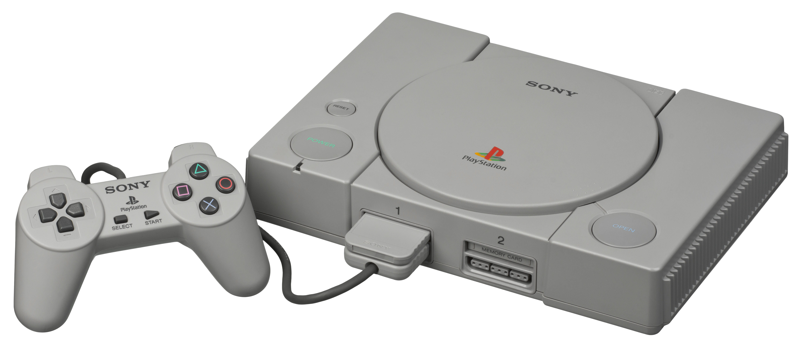

_______________________________________________________________________________
The original PS1 was the first home console developed by Sony and was first available in Japan in December 1994. It was released in 1995 in North America and Europe.
However, this time the road to overseas release was not easy, and the entire game industry almost went to another world line. The reason for this is the Nintendo PlayStation.

_______________________________________________________________________________
The PlayStation 2 was released later in 2000 and is compatible with the controller and all games of the original PlayStation. But the real source of the PS2's power is the DVD drive, which allows the console to run next-generation games and play movies independently.
This feature has attracted a new consumer base, and many people who had never intended to buy a console have bought the PS2, making it the best-selling console of all time. With a total of 159 million units sold, the PS2 remains the best-selling console seller to this day.
_______________________________________________________________________________
The success of the PS2 allowed Sony to confidently continue to develop the third generation console, but the console did not achieve the success they had expected. It all started with the announcement of the E3 PS3 in 2005, or rather the boomerang-like handle.
This grip changed the classic DualShock 2 style, and although it appeared on the 2005 E3, it was not the focus of Sony's announcement that year. The following year, they introduced the more traditional Sixaxis handle to replace the boomerang handle. But at E3 2006, Sony's launch event sparked even more doubts, and it was probably the most embarrassing event in E3 history.
_______________________________________________________________________________
The PS4, unlike all previous PlayStation consoles, wasn't built with a new medium in mind (the PS1 was a CD, the PS2 was a DVD, and the PS3 was a Blu-ray), but the console still had a bright future for Sony.
The PS4 was first unveiled in 2013, and at E3 that same year Sony announced that its fourth-generation console would go on sale on 15 November for just $399. Sony also announced that the new console would move away from the Cell processor architecture in favour of a more standard AMD APU.
_______________________________________________________________________________